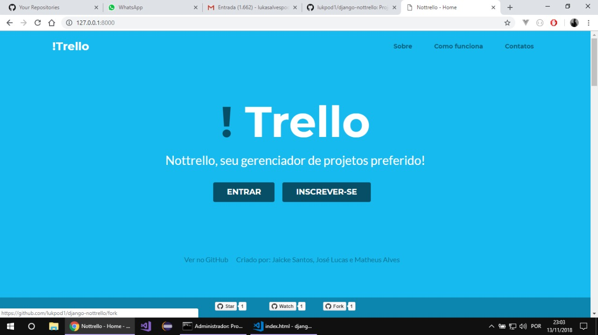

Sobre mim
Oi, bem-vindo ao meu site. Meu nome é José Lucas Alves da Silva, tenho 19 anos e estou cursando o 4º período do curso de Ciência da Computação na faculdade IPESU. Fiz esse site para mostrar um pouco dos projetos que tenho feito nos últimos anos. Atualmente meu objetivo é conseguir uma vaga de estágio para ajudar no meu crescimento como desenvolvedor de software. Tenho conhecimento básico em Java, C# e Python. Além disso, sou cristão e músico.
Projetos de Faculdade
!Trello (NotTrello)
O Nottrello é uma ferramenta de gerenciamento de projetos em listas e que pode ser ajustado com a necessidade do usuário. Você pode utilizá-lo para organizar suas tarefas de trabalho, seus planos de viagens, as prioridades de seus estudos, entre muitos outros.
O projeto foi feito em 2 linguagens diferentes, pois foi apresentando em cadeiras diferentes. Na cadeira de Estrutura de Dados utilizei a Linguagem Python junto o framework Django. Já na cadeira de Aplicação em Linguagem de Programação Orientada a Ojetos utilizei a linguagem Java junto com o framework Spring Boot.
Código do Projeto em Python/Django:
https://github.com/lukpod1/django-nottrello
Código do Projeto em Java/SpringBoot:
https://github.com/lukpod1/nottrello
Tecnolohias utilizadas:
- Java
- MySQL
- SpringBoot
- Python
- Django
- ChartJS
- JQuery
- Bootstrap 4
Loja Fitness
A Loja Fitness é uma aplicação que utiliza as operações de CRUD(Create, Read, Update e Delete) em uma base de dados. A ideia principal desse projeto é o gerenciamento de produtos de uma loja que trabalho com diversos produtos utillizados em academia e a venda desses produtos.
Código Fonte:
https://github.com/lukpod1/LojaFitness2
Tecnolohias utilizadas:
- Java
- MySQL
Sistema de Estatistica
O Sistema de Estatitisca foi desenvolvido com a finalidade de desenvolver calculos de estatistica como:
- Média
- Moda
- Mediana
- Desvio Padrão
- Quartis
- Simetria
- Probalidade
Código Fonte:
https://github.com/lukpod1/Projeto-Estatistica
Tecnologias utilizadas:
- C#
Disk Pizza
O Disk Pizza foi desenvolvido para simular a venda de pizzas onde, o cliente poderá informar o sabor, o tamanho, o sabor das bordas, a forma de pagamento que deseja comprar e seu endereço para a entrega da pizza.
Código Fonte:
https://github.com/lukpod1/Disk-Pizza
Tecnologias utilizadas:
- Javascript
- HTML/CSS
Habilidades & Ferramentas
Frontend
-
HTML/CSS
-
JavaScript
Backend
-
Java
-
C#
-
Python
Outros
- Bootstrap
- MySQL
- Git
- Postgre
- Django
- Spring
Educação
-
Graduando - Ciência da ComputaçãoIpesu Metrô2017 - 2020
Idioma
- Inglês (Intermédiario)
Interesses
- Ler Livros
- Tocar Guitarra
- Games
Outros Projetos
Dog Rescue
Dog Rescue foi um projeto apresentado na fase final de um curso de Web Design realizado pelo S2B - MICETEPAM. O objetivo principal desse projeto é conscientizar e incentivar o resgate e a adoção de cães na região pernambucana. Esse serviço permite que os interessados primeiramente, se cadastrem no site, informando suas características como, se praticam algum tipo de atividade, o tamanho do espaço onde moram, se possuem um tempo livre para que de acordo com o seu perfil se encaixe com algum cão.
Código Fonte:
https://github.com/lukpod1/Dog-Rescue
Tecnologias utilizadas:
- HTML/CSS
- Javascript